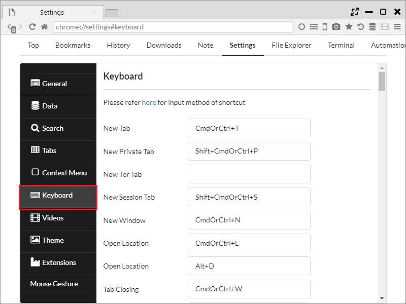

Keyboard Shortcut
It is possible to set up the keyboard shortcuts for over 100 functions. 
1. Settings
You can set shortcuts from "Settings> Keyboard".
The key input is as written in the link, and here is an example:
- Ctrl+T ・・・ Press t key while pressing Ctrl.
- Alt+@ ・・・ Press @ key while pressing Alt.
- Space ・・・ Space key
The following operations can be set up.
- New Tab (CmdOrCtrl+T)
- New Private Tab (Shift+CmdOrCtrl+P)
- New Tor Tab
- New Session Tab (Shift+CmdOrCtrl+S)
- New Window (CmdOrCtrl+N)
- Open Location (CmdOrCtrl+L Alt+D)
- Tab Closing (CmdOrCtrl+W)
- Close Window (CmdOrCtrl+Shift+W Ctrl+F4)
- Close All Tabs (CmdOrCtrl+Alt+C)
- Close other Tabs (Shift+CmdOrCtrl+O)
- Close tabs to the left
- Close tabs to the right
- Save Page as (CmdOrCtrl+S)
- Print (CmdOrCtrl+P)
- Restart Browser
- Quit Sushi Browser (CmdOrCtrl+Q)
- Undo (CmdOrCtrl+Z)
- Redo (CmdOrCtrl+Y)
- Cut (CmdOrCtrl+X)
- Copy (CmdOrCtrl+C)
- Paste (CmdOrCtrl+V)
- Paste Without Formatting (Shift+CmdOrCtrl+V)
- Select All (CmdOrCtrl+A)
- Find on Page (CmdOrCtrl+F F6)
- Find Next (CmdOrCtrl+G)
- Find Previous (CmdOrCtrl+Shift+G)
- Actual Size (CmdOrCtrl+0)
- Zoom In (CmdOrCtrl+= CmdOrCtrl+Shift+=)
- Zoom Out (CmdOrCtrl+- CmdOrCtrl+Shift+-)
- Stop (Esc)
- Reload Page (CmdOrCtrl+R F5)
- Clean Reload (CmdOrCtrl+Shift+R Ctrl+F5)
- Reloads all tabs (CmdOrCtrl+Alt+R)
- Reloads other tabs (CmdOrCtrl+Alt+O)
- Reloads left tabs (CmdOrCtrl+Alt+L)
- Reloads right tabs (CmdOrCtrl+Alt+I)
- Toggle Developer Tools (Ctrl+Shift+I CmdOrCtrl+Alt+J F11)
- Home (CmdOrCtrl+Shift+H)
- Back (CmdOrCtrl+[ Alt+Left)
- Forward (CmdOrCtrl+] Alt+Right)
- Reopen Last Closed Tab (Shift+CmdOrCtrl+T)
- Reopens all closed tabs (Shift+CmdOrCtrl+A) ・・・ Open all the tabs closed on the chosen panel.
- Bookmark all tabs (Shift+CmdOrCtrl+B)
- Bookmarks (Ctrl+Shift+O)
- Bookmark Page (CmdOrCtrl+D)
- Show History (CmdOrCtrl+Y)
- Open Note
- Settings (CmdOrCtrl+,)
- Open FileExploler
- Open Terminal
- Open Automation
- Open VideoConverter
- View Page Source (Ctrl+U)
- Minimize (CmdOrCtrl+M)
- Select Next Tab (Ctrl+Tab CmdOrCtrl+Shift+] Ctrl+PageDown)
- Select Previous Tab (Ctrl+Shift+Tab CmdOrCtrl+Shift+[ Ctrl+PageUp)
- Tab 1 (CmdOrCtrl+1)
- Tab 2 (CmdOrCtrl+2)
- Tab 3 (CmdOrCtrl+3)
- Tab 4 (CmdOrCtrl+4)
- Tab 5 (CmdOrCtrl+5)
- Tab 6 (CmdOrCtrl+6)
- Tab 7 (CmdOrCtrl+7)
- Tab 8 (CmdOrCtrl+8)
- Last tab (CmdOrCtrl+9)
- Multi Row Tabs ・・・ Switching of multi-row tabs.
- Tab Preview ・・・ Switching of Tab Preview
- Toggle MenuBar (CmdOrCtrl+Alt+T) ・・・ Switching of one Line mode
- Change Focus Panel (CmdOrCtrl+Alt+Space) ・・・ Move the focus of the panel
- Split Left (CmdOrCtrl+Alt+Left)
- Split Right (CmdOrCtrl+Alt+Right)
- Split Top (CmdOrCtrl+Alt+Up)
- Split Bottom (CmdOrCtrl+Alt+Down)
- Split left tabs to left ・・・ Spliting a tab left than a current tab into the left panel.
- Split right tabs to right ・・・ Spliting a tab right than a current tab into the right panel.
- Swap Position (CmdOrCtrl+Alt+P) ・・・ Exchange the position of the panel.
- Switch Direction (CmdOrCtrl+Alt+D) ・・・ Exchange the direction of the panel
- Align Horizontal (CmdOrCtrl+Alt+H)
- Align Vertical (CmdOrCtrl+Alt+V)
- Switch Sync Scroll (CmdOrCtrl+Alt+S)
- Open Sidebar (CmdOrCtrl+Alt+B)
- Enable Search Highlight
- Change to Mobile Agent (CmdOrCtrl+Alt+M)
- Detach Panel (CmdOrCtrl+Alt+E)
- Copies the tab's URL to the clipboard
- Load URL from clipboard (CmdOrCtrl+Alt+U)
- Paste and Open (CmdOrCtrl+Alt+N) ・・・ Open an URL of the clipboard on a new tab. (It is possible to open multiple URL with a break of a new line.)
- Copy Tab Info ・・・ Copying a tab information(number, URL, title)
- Copy All Tab Titles ・・・ Copying all tab titles
- Copy All Tab URLs ・・・ Copying all tab URLs
- Copy All Tab Infos ・・・ Copying all tab information(number, URL, title)
- Duplicate tab
- Pin
- Mute Tab (Shift+CmdOrCtrl+M)
- Freeze Tab
- Protect Tab
- Lock Tab
- Downloads (Ctrl+J) ・・・ Open downloader page.
- Full Page Capture to Clipboard
- Full Page Capture as JPEG
- Full Page Capture as PNG
- Selection Capture to Clipboard
- Selection Capture as JPEG
- Selection Capture as PNG
- Hide Sushi Browser (Command+H)
- Hide Others (Command+Alt+H)